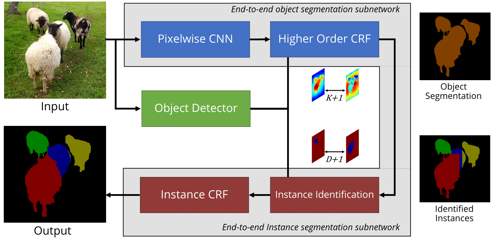

Abstract: Traditional Scene Understanding problems such as Object Detection and Semantic Segmentation have made breakthroughs in recent years due to the adoption of deep learning. However, the former task is not able to localise objects at a pixel level, and the latter task has no notion of different instances of objects of the same class. We focus on the task of Instance Segmentation which recognises and localises objects down to a pixel level. Our model is based on a deep neural network trained for semantic segmentation. This network incorporates a Conditional Random Field with end-to-end trainable higher order potentials based on object detector outputs. This allows us to reason about instances from an initial, category-level semantic segmentation. Our simple method effectively leverages the great progress recently made in semantic segmentation and object detection. The accurate instance-level segmentations that our network produces is reflected by the considerable improvements obtained over previous work at high \(AP^r\) IoU thresholds.
